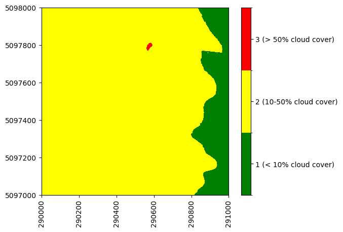
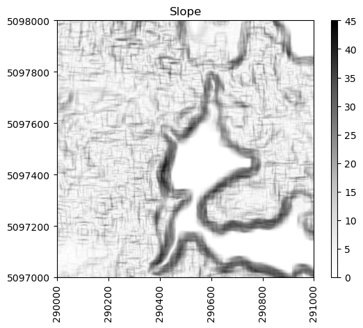
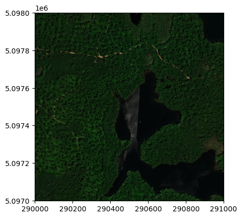
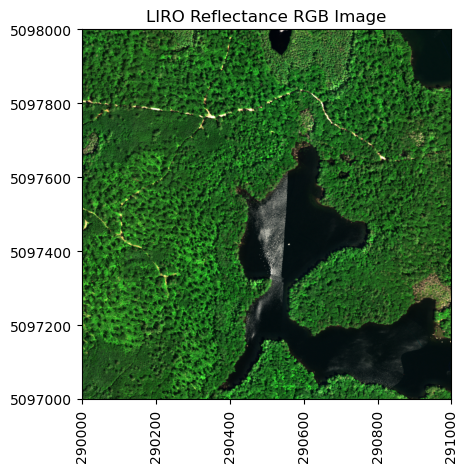
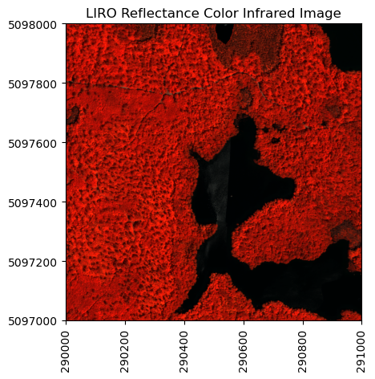

import os, shutil
import json
import h5py
from neonutilities import list_available_dates, get_aop_tile_extents, by_tile_aop
import numpy as np
import pandas as pd
from osgeo import gdal
import matplotlib.pyplot as plt
from skimage import exposureIntroduction to Bidirectional Hyperspectral Reflectance Data in Python
Learn how to read NEON AOP L3 bidirectional (BRDF-corrected) reflectance h5 data in Python and visualize spectral data.
In this introductory tutorial, we demonstrate how to read NEON AOP bidirectional hyperspectral reflectance (Level 3, tiled - DP3.30006.002) data in Python. For a more general introduction to Hyperspectral remote sensing data in Python, please refer to the related lesson: NEON AOP Hyperspectral Data in HDF5 format with Python, which works with the previous revision of the same reflectance data product.
In Spring 2024, AOP started producing revised (.002) spectrometer data products, which incorporate Bidirectional Reflectance Distribution Function (BRDF) and topographic corrections. Airborne hyperspectral data acquired between 2022 - 2024 have been processed with these corrections, and downstream Level 2 and Level 3 derived spectrometer data products (eg. vegetation and water indices, fPAR, LAI, etc.) are now generated from this bidirectional (BRDF-corrected) reflectance data. The L1 directional reflectance data will still be available under the original .001 revision # (DP1.30006.001). Eventually, all previous years of data (2013-2021) will also be re-processed to apply the BRDF and topographic corrections. Updates on this progress will be posted as Data Notifications on the NEON Data Portal.
The new bidirectional data includes some slight modifications to the H5 contents, including some additional fields specific to the BRDF corrections. This tutorial outlines the major differences and highlights information you may want to incorporate when working with this revised data product. The tutorial also covers fundamental steps of reading in and exploring the HDF5 (h5) format that the reflectance data is delivered in. You will learn skills to explore and visualize the spectral data, and learn to make some functions for streamlining this process. .
Learning Objectives
After completing this tutorial, you will be able to:
- Understand the differences between the directional (DP3.30006.001) and bidirectional (DP3.30006.002) surface reflectance data and H5 contents.
- Use the package
h5pyand thevisititemsmethod to read a bidirectional reflectance HDF5 file and view data attributes. - Read in and plot some of the reflectance Ancillary Imagery and Logs data, including the Weather Quality Indicator and the Acquisition Date.
- Extract and plot RGB and False-Color images from different band combinations of the reflectance data.
Install Python Packages
- gdal
- h5py
- json
- pandas
- neonutilities
Download Data
To complete this tutorial, you will download and read in surface bidirectional reflectance data collected at the NEON Little Rock Lake (LIRO) aquatic site in Wisconsin.
You can download this data from the NEON Data portal, using the Python neonutilities package (as shown in the lesson), or by clicking the link below:
Download the LI Bidirectional Reflectance Tile: NEON_D05_LIRO_DP3_290000_5097000_reflectance.h5
Additional Resources
Hyperspectral Resources
If you are new to NEON hyperspectral reflectance data, we recommend going through the tutorial series below, or at least the first lesson. This series uses the directional reflectance data (DP3.30006.001), but the same principles apply.
Introduction to Hyperspectral Remote Sensing Data in Python
More details about the surface directional reflectance data product can be found on the data product page, linked below. - Spectrometer orthorectified surface bidirectional reflectance - mosaic In addition, NEON’S Airborne Observation Platform provides Algorithm Theoretical Basis Documents (ATBDs) for all of the AOP data products. Please refer to the ATBDs below for a more in-depth understanding of the reflectance data.- NEON Imaging Spectrometer Radiance to Reflectance ATBD - Spectrometer Mosaic ATBD
Download the Topographic and BRDF Corrections ATBD: Topographic and BRDF Corrections ATBD
Setting up a NEON Data Portal User Account and Token
Finally, if you haven’t set up a user account and token on the NEON Data Portal, please refer to the lesson below. Using a token when downloading data via the API (including when using the neonutilities package), links your downloads to your user account and also enables faster download speeds. For more information about token usage and benefits, see the NEON API documentation page.
Using an API Token when Accessing NEON Data with neonUtilities
BRDF and Topographic Corrections
BRDF Correction
Objects appear differently when viewed from different angles, and when illuminated from different directions. The Bidirectional Reflectance Distribution Function (BRDF) describes the directional dependence of the reflected energy of a target as a function of illumination and viewing geometry. It also depends on the wavelength and structural and optical properties of the surface. In short, the BRDF correction helps to improve continuity in brightness levels between flightlines, and helps minimize the view and illumination angle effects.
Topographic Correction
Steep mountain slopes can significantly affect the remote sensing of vegetation. In areas with complex terrain, slopes facing the sun receive more light and appear brighter than slopes facing away from the sun. The irradiation on a slope varies strongly with the slope azimuth relative to the sun, and the reflectance of the slope varies with the angles of incidence and exitance relative to the slope normal. The topographic correction involves standardizing the imagery for these two effects based on the slope of the terrain and its relative position with the sun.
FlexBRDF
NEON followed the FlexBRDF approach to perform the topographic and BRDF corrections, following Queally et al. 2022. Details of the implementation are provided in the Topographic and BRDF Corrections ATBD, which can be downloaded from the link at the bottom of the previous section. Section 4.2 in the linked document provides a short summary of the approach. The BRDF correction is applied using the University of Wisconsin Environmental Spectroscopy Lab’s Python-based open-source software HyTools.

Changes to Bidirectional Reflectance HDF5 Files
If you’re working with the bidirectional reflectance data for the first time, we encourage you to start by exploring the HDF5 file in HDFView, a free software program that can be downloaded from the HDF Group Download Page. This provides a more interactive way to view the contents of the hdf5 files. The figure below shows a DP3.30006.002 and DP3.30006.001 file in HDFView for comparison.

|

|
As you can see, there are some differences in the HDF5 structure between the .001 (directional) and .002 (bidirectional) datasets. The major changes are summarized below, with additional details outlined in the table.
- Addition of an
Acquisition DateAncillary Image. - Updated
Weather Quality IndexAncillary Image. - Updated Logs to use file names from the L1 reflectance, including the flight line #, with addition of the raw file name to the top level.
- Consistency in fields for Ancillary Rasters.
- Consistency in NO DATA values across Ancillary Rasters.
- Addition of BRDF metadata.
| HDF Group/Field | Bidirectional Reflectance (DP3.30006.002) | Directional Reflectance (DP3.30006.001) |
|---|---|---|
| Ancillary_Imagery/Acquisition_Date | New field added, including the date (YYMMDD) of each pixel | Information is derived from Data Selection Index |
| Ancillary_Imagery/Weather_Quality_Indicator | Cloud cover % data provided as 1/2/3 where 1 = <10%, 2 = 10-50%, 3=>50% | Cloud cover data provided as R/G/B color combinations where Green = <10%, Yellow = 10-50%, and Red = >50% cloud cover |
| Logs | Log file names reflect the Flight Line #, corresonding to the L1 Reflectance Tile | Log file names reflect the time stamp of the flight line |
| Logs | BRDF logs added (BRDF_COEFFS_JSON_for_Hytools and BRDF_Config_JSON_for_Hytools) | No BRDF logs |
Now that you have a high-level picture of what has changed between the directional and bidirectional reflectance revisions, let’s take a more detailed look at the contents of the bidirectional reflectance data in Python.
In Python, you can look inside the HDF5 dataset with the h5py visititems function. The list_dataset function defined below displays all datasets stored in the hdf5 file and their locations within the hdf5 file:
Set up
First let’s import the required packages:
Download the Bidirectional Reflectance Data
You can download the bidirectional reflectance data tile using the Python neonutilities function by_tile_aop as follows. For more details on any of the neonutilities functions, you can use help, eg. type help(by_tile_aop). If you aren’t sure what data are currently available, or the extent of data available, you can use the functions list_available_dates and get_aop_tile_extents as shown below.
list_available_dates('DP3.30006.002','LIRO')PROVISIONAL Available Dates: 2022-06There are provisional data available in 2022 (2022-06 is the YYYY-MM date, so 2022-06 means those data are available in June 2022). If you don’t want to download all of the data, you can use by_tile_aop to download data encompassing specified coordinates. L3 data are provided as mosaicked 1km x 1km tiles, where the UTM coordinates of the SW corner is specified in the file name. To first determine what tiles are available, you can use the get_aop_tile_extents function, as shown in the next cell.
liro_2022_refl_exts = get_aop_tile_extents('DP3.30006.002','LIRO',2022)Easting Bounds: (289000, 292000)
Northing Bounds: (5094000, 5101000)This shows the Easting and Northing Bounds (minimum and maximum values). Type print(liro_2022_refl_exts) to display a complete list of all the UTM coordinates of the tiles. Not all of the AOP flight boxes are rectangular in shape, so for these sites that have an irregular polygon shape, it may help to see the full list of available tiles. Likewise, in some years, AOP may not obtain complete coverage of a site, due to poor weather or other logistical constraints.
Next let’s use by_tile_aop to download a bidirectional reflectance tile. We highly encourage using a token for larger AOP downloads, such as the reflectance data. Refer to the Using an API Token when Accessing NEON Data with neonUtilities tutorial to set up a User Account and Token, if you haven’t already done so.
By default, this function will display the total size of the data to be download and ask you if you want to proceed. Type y for yes to continue with the download. Optionally, you can set the input parameter check_size=False if you want to download data regardless of the size. The download may take up to a minute or two to complete.
NEON_TOKEN="YOUR_TOKEN_HERE"
by_tile_aop(dpid='DP3.30006.002',
site='LIRO',
year=2022,
easting=290001,
northing=5097001,
include_provisional=True,
savepath='./data',
token=NEON_TOKEN)Provisional data are included. To exclude provisional data, use input parameter include_provisional=False.Continuing will download 2 files totaling approximately 669.3 MB. Do you want to proceed? (y/n) yDownloading 2 files totaling approximately 669.3 MB
100%|███████████████████████████████████████████████████████████████████████████████████████████████████████████████████| 2/2 [00:57<00:00, 28.51s/it]The reflectance data tile is now downloaded into the ‘./data’ directory and maintains a path structure as the data is stored on Google Cloud Storage (GCS). You can use the code cell below to walk through all the directories and display where the .h5 file was downloaded.
for root, dirs, files in os.walk("data"):
for file in files:
if file.endswith(".h5"):
print(os.path.join(root, file))data\NEON_D05_LIRO_DP3_290000_5097000_bidirectional_reflectance.h5
data\DP3.30006.002\neon-aop-provisional-products\2022\FullSite\D05\2022_LIRO_3\L3\Spectrometer\Reflectance\NEON_D05_LIRO_DP3_290000_5097000_bidirectional_reflectance.h5You may wish to move the .h5 file to a more convenient path - for example, you could move all the .h5 files (in this case just one) downloaded to the data folder, for simplicity. You can do that as follows:
# Walk through the 'data' directory
for root, dirs, files in os.walk("data"):
for file in files:
if file.endswith(".h5"):
# Construct the full file path
file_path = os.path.join(root, file)
print(file_path)
# Construct the destination path
destination_path = os.path.join("data", file)
# Move the file to the 'data' directory
shutil.move(file_path, destination_path)
print(f"Moved {file} to {destination_path}")data\NEON_D05_LIRO_DP3_290000_5097000_bidirectional_reflectance.h5
Moved NEON_D05_LIRO_DP3_290000_5097000_bidirectional_reflectance.h5 to data\NEON_D05_LIRO_DP3_290000_5097000_bidirectional_reflectance.h5
data\DP3.30006.002\neon-aop-provisional-products\2022\FullSite\D05\2022_LIRO_3\L3\Spectrometer\Reflectance\NEON_D05_LIRO_DP3_290000_5097000_bidirectional_reflectance.h5
Moved NEON_D05_LIRO_DP3_290000_5097000_bidirectional_reflectance.h5 to data\NEON_D05_LIRO_DP3_290000_5097000_bidirectional_reflectance.h5Read in the bidirectional reflectance .h5 dataset
To start, make sure the NEON surface bidirectional reflectance data (DP3.30006.002) is downloaded (see instructions at the top of this lesson) and located in the data folder under your working directory. You can change the path, but make sure to update the script to point to where you’ve saved this file.
# display the contents in the ./data folder to confirm the file is in the correct location
os.listdir('./data')['DP3.30006.002',
'NEON_D05_LIRO_DP3_290000_5097000_bidirectional_reflectance.h5']Let’s explore the hyperspectral reflectance data. Note that if the h5 file is stored in a different directory than where you are running your notebook, you need to include the path (either relative or absolute) to the directory where that data file is stored. Use os.path.join to create the full path of the file.
# Note that you may need to update this filepath for your local machine
h5_file = h5py.File('./data/NEON_D05_LIRO_DP3_290000_5097000_bidirectional_reflectance.h5','r')#list_dataset lists the names of datasets in an hdf5 file
def list_dataset(name,node):
if isinstance(node, h5py.Dataset):
print(name)
h5_file.visititems(list_dataset)LIRO/Reflectance/Metadata/Ancillary_Imagery/Acquisition_Date
LIRO/Reflectance/Metadata/Ancillary_Imagery/Aerosol_Optical_Thickness
LIRO/Reflectance/Metadata/Ancillary_Imagery/Aspect
LIRO/Reflectance/Metadata/Ancillary_Imagery/Cast_Shadow
LIRO/Reflectance/Metadata/Ancillary_Imagery/Dark_Dense_Vegetation_Classification
LIRO/Reflectance/Metadata/Ancillary_Imagery/Data_Selection_Index
LIRO/Reflectance/Metadata/Ancillary_Imagery/Haze_Cloud_Water_Map
LIRO/Reflectance/Metadata/Ancillary_Imagery/Illumination_Factor
LIRO/Reflectance/Metadata/Ancillary_Imagery/Path_Length
LIRO/Reflectance/Metadata/Ancillary_Imagery/Sky_View_Factor
LIRO/Reflectance/Metadata/Ancillary_Imagery/Slope
LIRO/Reflectance/Metadata/Ancillary_Imagery/Smooth_Surface_Elevation
LIRO/Reflectance/Metadata/Ancillary_Imagery/Visibility_Index_Map
LIRO/Reflectance/Metadata/Ancillary_Imagery/Water_Vapor_Column
LIRO/Reflectance/Metadata/Ancillary_Imagery/Weather_Quality_Indicator
LIRO/Reflectance/Metadata/Coordinate_System/Coordinate_System_String
LIRO/Reflectance/Metadata/Coordinate_System/EPSG Code
LIRO/Reflectance/Metadata/Coordinate_System/Map_Info
LIRO/Reflectance/Metadata/Coordinate_System/Proj4
LIRO/Reflectance/Metadata/Logs/L004-1_20220623/ATCOR_Input_file
LIRO/Reflectance/Metadata/Logs/L004-1_20220623/ATCOR_Processing_Log
LIRO/Reflectance/Metadata/Logs/L004-1_20220623/BRDF_COEFFS_JSON_for_Hytools
LIRO/Reflectance/Metadata/Logs/L004-1_20220623/BRDF_Config_JSON_for_Hytools
LIRO/Reflectance/Metadata/Logs/L004-1_20220623/Shadow_Processing_Log
LIRO/Reflectance/Metadata/Logs/L004-1_20220623/Skyview_Processing_Log
LIRO/Reflectance/Metadata/Logs/L004-1_20220623/Solar_Azimuth_Angle
LIRO/Reflectance/Metadata/Logs/L004-1_20220623/Solar_Zenith_Angle
LIRO/Reflectance/Metadata/Logs/L005-1_20220617/ATCOR_Input_file
LIRO/Reflectance/Metadata/Logs/L005-1_20220617/ATCOR_Processing_Log
LIRO/Reflectance/Metadata/Logs/L005-1_20220617/BRDF_COEFFS_JSON_for_Hytools
LIRO/Reflectance/Metadata/Logs/L005-1_20220617/BRDF_Config_JSON_for_Hytools
LIRO/Reflectance/Metadata/Logs/L005-1_20220617/Shadow_Processing_Log
LIRO/Reflectance/Metadata/Logs/L005-1_20220617/Skyview_Processing_Log
LIRO/Reflectance/Metadata/Logs/L005-1_20220617/Solar_Azimuth_Angle
LIRO/Reflectance/Metadata/Logs/L005-1_20220617/Solar_Zenith_Angle
LIRO/Reflectance/Metadata/Logs/L005-1_20220623/ATCOR_Input_file
LIRO/Reflectance/Metadata/Logs/L005-1_20220623/ATCOR_Processing_Log
LIRO/Reflectance/Metadata/Logs/L005-1_20220623/BRDF_COEFFS_JSON_for_Hytools
LIRO/Reflectance/Metadata/Logs/L005-1_20220623/BRDF_Config_JSON_for_Hytools
LIRO/Reflectance/Metadata/Logs/L005-1_20220623/Shadow_Processing_Log
LIRO/Reflectance/Metadata/Logs/L005-1_20220623/Skyview_Processing_Log
LIRO/Reflectance/Metadata/Logs/L005-1_20220623/Solar_Azimuth_Angle
LIRO/Reflectance/Metadata/Logs/L005-1_20220623/Solar_Zenith_Angle
LIRO/Reflectance/Metadata/Logs/L006-1_20220617/ATCOR_Input_file
LIRO/Reflectance/Metadata/Logs/L006-1_20220617/ATCOR_Processing_Log
LIRO/Reflectance/Metadata/Logs/L006-1_20220617/BRDF_COEFFS_JSON_for_Hytools
LIRO/Reflectance/Metadata/Logs/L006-1_20220617/BRDF_Config_JSON_for_Hytools
LIRO/Reflectance/Metadata/Logs/L006-1_20220617/Shadow_Processing_Log
LIRO/Reflectance/Metadata/Logs/L006-1_20220617/Skyview_Processing_Log
LIRO/Reflectance/Metadata/Logs/L006-1_20220617/Solar_Azimuth_Angle
LIRO/Reflectance/Metadata/Logs/L006-1_20220617/Solar_Zenith_Angle
LIRO/Reflectance/Metadata/Logs/L006-1_20220623/ATCOR_Input_file
LIRO/Reflectance/Metadata/Logs/L006-1_20220623/ATCOR_Processing_Log
LIRO/Reflectance/Metadata/Logs/L006-1_20220623/BRDF_COEFFS_JSON_for_Hytools
LIRO/Reflectance/Metadata/Logs/L006-1_20220623/BRDF_Config_JSON_for_Hytools
LIRO/Reflectance/Metadata/Logs/L006-1_20220623/Shadow_Processing_Log
LIRO/Reflectance/Metadata/Logs/L006-1_20220623/Skyview_Processing_Log
LIRO/Reflectance/Metadata/Logs/L006-1_20220623/Solar_Azimuth_Angle
LIRO/Reflectance/Metadata/Logs/L006-1_20220623/Solar_Zenith_Angle
LIRO/Reflectance/Metadata/Logs/L007-1_20220623/ATCOR_Input_file
LIRO/Reflectance/Metadata/Logs/L007-1_20220623/ATCOR_Processing_Log
LIRO/Reflectance/Metadata/Logs/L007-1_20220623/BRDF_COEFFS_JSON_for_Hytools
LIRO/Reflectance/Metadata/Logs/L007-1_20220623/BRDF_Config_JSON_for_Hytools
LIRO/Reflectance/Metadata/Logs/L007-1_20220623/Shadow_Processing_Log
LIRO/Reflectance/Metadata/Logs/L007-1_20220623/Skyview_Processing_Log
LIRO/Reflectance/Metadata/Logs/L007-1_20220623/Solar_Azimuth_Angle
LIRO/Reflectance/Metadata/Logs/L007-1_20220623/Solar_Zenith_Angle
LIRO/Reflectance/Metadata/Spectral_Data/FWHM
LIRO/Reflectance/Metadata/Spectral_Data/Wavelength
LIRO/Reflectance/Metadata/to-sensor_Azimuth_Angle
LIRO/Reflectance/Metadata/to-sensor_Zenith_Angle
LIRO/Reflectance/Reflectance_DataYou can see that there is a lot of information stored inside this reflectance hdf5 file. Most of this information is metadata (data about the reflectance data), for example, this file stores input parameters used in the atmospheric correction.
For this introductory lesson, we will explore some of these datasets, including the reflectance data (hyperspectral cube), and the corresponding geospatial information, stored in Metadata/Coordinate_System.
Reflectance/Reflectance_DataReflectance/Metadata/Coordinate_System/Reflectance/Metadata/Spectral_Data/Wavelength
We will also highlight some of the new and updated datasets that differ from the previous h5 format for the directional reflectance (DP3.30006.001). These include:
Reflectance/Metadata/Ancillary_Imagery/Acqusition_DateReflectance/Metadata/Ancillary_Imagery/Weather_Quality_IndicatorReflectance/Metadata/Logs/L004-1_20220623/BRDF_COEFFS_JSON_for_HytoolsReflectance/Metadata/Logs/L004-1_20220623/BRDF_Config_JSON_for_Hytools
The function below pulls out some spatial information about the dataset that will come in handy for plotting.
def get_spatial_info(hdf5_file):
# get the site name
site_name = str(list(hdf5_file.items())).split("'")[1]
product_type = str(list(hdf5_file[site_name].items())).split("'")[1] # this is the Reflectance
base_loc = hdf5_file[site_name][product_type]
refl_shape = base_loc['Reflectance_Data'].shape
# create a metadata dictionary to store the relevant map information
metadata = {}
metadata['projection'] = base_loc['Metadata']['Coordinate_System']['Proj4'][()]
metadata['EPSG'] = int(base_loc['Metadata']['Coordinate_System']['EPSG Code'][()])
map_info = base_loc['Metadata']['Coordinate_System']['Map_Info'][()]
map_info_split = str(map_info).split(",")
# extract the resolution & convert to floating decimal number
pixel_width = float(map_info_split[5])
pixel_height = float(map_info_split[6])
# extract the upper left-hand corner coordinates from map_info and cast to float
x_min = float(map_info_split[3])
y_max = float(map_info_split[4])
# calculate the x_max and yMin values from the dimensions
x_max = x_min + (refl_shape[1]*pixel_width) #xMax = left edge + (# of columns * x_resolution)\n",
y_min = y_max - (refl_shape[0]*pixel_height) #yMin = top edge - (# of rows * y_resolution)\n",
metadata['extent'] = (x_min,x_max,y_min,y_max)
return metadataRun this function on the LIRO dataset to see what it returns:
map_info = get_spatial_info(h5_file)
map_info{'projection': b'+proj=UTM +zone=16 +ellps=WGS84 +datum=WGS84 +units=m +no_defs',
'EPSG': 32616,
'extent': (290000.0, 291000.0, 5097000.0, 5098000.0)}Now that we have the spatial information, let’s start looking at the data. To start, we can pull out all the Ancillary_Imagery data into a Python dictionary as follows:
# create a dictionary containing the Ancillary Images
sitename = str(list(h5_file.items())).split("'")[1] # this is LIRO for this example, but if you use another dataset, this is more generic
ancillary_image_names = list(h5_file[f'{sitename}/Reflectance/Metadata/Ancillary_Imagery'].keys())
ancillary_image_paths = [f'{sitename}/Reflectance/Metadata/Ancillary_Imagery/{im}' for im in ancillary_image_names]
ancillary_images = [h5_file[path][()] for path in ancillary_image_paths]
anc_image_dict = dict(zip(ancillary_image_names,ancillary_images))
# display the dictionary
anc_image_dict{'Acquisition_Date': array([[20220623, 20220623, 20220623, ..., 20220623, 20220623, 20220623],
[20220623, 20220623, 20220623, ..., 20220623, 20220623, 20220623],
[20220623, 20220623, 20220623, ..., 20220623, 20220623, 20220623],
...,
[20220623, 20220623, 20220623, ..., 20220623, 20220623, 20220623],
[20220623, 20220623, 20220623, ..., 20220623, 20220623, 20220623],
[20220623, 20220623, 20220623, ..., 20220623, 20220623, 20220623]]),
'Aerosol_Optical_Thickness': array([[194., 194., 194., ..., 200., 200., 200.],
[194., 194., 194., ..., 200., 200., 200.],
[194., 194., 194., ..., 200., 200., 200.],
...,
[161., 161., 161., ..., 211., 211., 211.],
[161., 161., 161., ..., 211., 211., 211.],
[161., 161., 161., ..., 211., 211., 211.]], dtype=float32),
'Aspect': array([[261.08093 , 246.32469 , 240.37682 , ..., 86.42367 , 93.01279 ,
90. ],
[245.40097 , 226.64857 , 225.40874 , ..., 83.29016 , 81.027374,
66.80141 ],
[256.24622 , 226.46211 , 226.57805 , ..., 98.972626, 98.972626,
123.69006 ],
...,
[149.98001 , 149.26245 , 147.871 , ..., 41.82997 , 40.090603,
39.70494 ],
[150.28685 , 150.06934 , 148.8032 , ..., 43.94467 , 42.518238,
42.363697],
[150.07767 , 149.9158 , 148.82988 , ..., 47.395676, 46.086636,
45.983833]], dtype=float32),
'Cast_Shadow': array([[1., 1., 1., ..., 1., 1., 1.],
[1., 1., 1., ..., 1., 1., 1.],
[1., 1., 1., ..., 1., 1., 1.],
...,
[1., 1., 1., ..., 1., 1., 1.],
[1., 1., 1., ..., 1., 1., 1.],
[1., 1., 1., ..., 1., 1., 1.]], dtype=float32),
'Dark_Dense_Vegetation_Classification': array([[3, 3, 3, ..., 1, 1, 1],
[3, 3, 3, ..., 1, 1, 1],
[3, 3, 3, ..., 1, 1, 1],
...,
[3, 3, 3, ..., 2, 2, 2],
[3, 3, 3, ..., 2, 2, 2],
[3, 3, 3, ..., 2, 2, 2]], dtype=uint8),
'Data_Selection_Index': array([[12, 12, 12, ..., 9, 9, 9],
[12, 12, 12, ..., 9, 9, 9],
[12, 12, 12, ..., 9, 9, 9],
...,
[12, 12, 12, ..., 9, 9, 9],
[12, 12, 12, ..., 9, 9, 9],
[12, 12, 12, ..., 9, 9, 9]]),
'Haze_Cloud_Water_Map': array([[3, 3, 3, ..., 1, 1, 1],
[3, 3, 3, ..., 1, 1, 1],
[3, 3, 3, ..., 1, 1, 1],
...,
[3, 3, 3, ..., 2, 2, 2],
[3, 3, 3, ..., 2, 2, 2],
[3, 3, 3, ..., 2, 2, 2]], dtype=uint8),
'Illumination_Factor': array([[84., 85., 85., ..., 86., 86., 86.],
[85., 87., 86., ..., 86., 86., 86.],
[86., 87., 87., ..., 86., 86., 86.],
...,
[94., 95., 95., ..., 78., 77., 77.],
[95., 95., 95., ..., 80., 79., 79.],
[95., 95., 96., ..., 82., 81., 81.]], dtype=float32),
'Path_Length': array([[ 987.98065, 987.52844, 987.3978 , ..., 1052.3306 , 1052.151 ,
1052.053 ],
[ 988.1091 , 987.31824, 987.32806, ..., 1052.3868 , 1052.1865 ,
1051.9873 ],
[ 987.90106, 987.3085 , 987.0074 , ..., 1052.3856 , 1052.165 ,
1051.966 ],
...,
[1007.4887 , 1008.27515, 1015.2912 , ..., 1049.5427 , 1049.8715 ,
1049.3566 ],
[1008.6032 , 1019.3234 , 1014.8984 , ..., 1048.8473 , 1049.2275 ,
1046.6539 ],
[1011.15393, 1016.7114 , 1013.91504, ..., 1048.599 , 1042.2389 ,
1042.2389 ]], dtype=float32),
'Sky_View_Factor': array([[98., 98., 98., ..., 97., 97., 97.],
[98., 98., 98., ..., 97., 97., 97.],
[98., 98., 98., ..., 97., 97., 97.],
...,
[95., 95., 95., ..., 90., 90., 91.],
[95., 95., 95., ..., 93., 93., 91.],
[95., 94., 94., ..., 93., 93., 93.]], dtype=float32),
'Slope': array([[5.1402011e+00, 4.7354989e+00, 6.0021877e+00, ..., 1.4015521e-02,
1.6634010e-02, 6.9941138e-03],
[4.3225102e+00, 4.3750796e+00, 5.8721676e+00, ..., 1.4964992e-02,
1.6816808e-02, 6.6581978e-03],
[2.8365092e+00, 2.7115109e+00, 4.3466454e+00, ..., 1.6816808e-02,
1.6816808e-02, 6.3044089e-03],
...,
[1.0582998e+01, 1.1100612e+01, 1.1690731e+01, ..., 2.7058205e+01,
2.6974607e+01, 2.7148523e+01],
[1.1586640e+01, 1.2123251e+01, 1.2760822e+01, ..., 2.5439777e+01,
2.5439209e+01, 2.5682121e+01],
[1.2407374e+01, 1.2923250e+01, 1.3561447e+01, ..., 2.3443769e+01,
2.3602884e+01, 2.3984230e+01]], dtype=float32),
'Smooth_Surface_Elevation': array([[524.9416 , 525.02014, 525.0957 , ..., 495.1146 , 495.11423,
495.114 ],
[524.9064 , 524.96277, 525.0171 , ..., 495.11484, 495.11447,
495.11426],
[524.8794 , 524.9146 , 524.94904, ..., 495.1147 , 495.11432,
495.1141 ],
...,
[518.654 , 518.55975, 518.45404, ..., 510.5763 , 510.24155,
509.9204 ],
[518.4886 , 518.3865 , 518.27515, ..., 510.93674, 510.61002,
510.29437],
[518.2981 , 518.1863 , 518.0675 , ..., 511.26312, 510.9449 ,
510.6319 ]], dtype=float32),
'Visibility_Index_Map': array([[26., 26., 26., ..., 27., 27., 27.],
[26., 26., 26., ..., 27., 27., 27.],
[26., 26., 26., ..., 27., 27., 27.],
...,
[20., 20., 20., ..., 29., 29., 29.],
[20., 20., 20., ..., 29., 29., 29.],
[20., 20., 20., ..., 29., 29., 29.]], dtype=float32),
'Water_Vapor_Column': array([[2353., 2352., 2350., ..., 2349., 2349., 2349.],
[2351., 2351., 2349., ..., 2349., 2349., 2349.],
[2351., 2350., 2349., ..., 2349., 2349., 2349.],
...,
[2154., 2153., 2152., ..., 2254., 2252., 2245.],
[2152., 2151., 2150., ..., 2261., 2258., 2252.],
[2151., 2150., 2148., ..., 2268., 2265., 2259.]], dtype=float32),
'Weather_Quality_Indicator': array([[2, 2, 2, ..., 1, 1, 1],
[2, 2, 2, ..., 1, 1, 1],
[2, 2, 2, ..., 1, 1, 1],
...,
[2, 2, 2, ..., 1, 1, 1],
[2, 2, 2, ..., 1, 1, 1],
[2, 2, 2, ..., 1, 1, 1]])}Weather Quality Indicator
One of the most critical factors impacting the data quality are the weather conditions during the flight. While AOP strives to collect in optimal conditions, this is not always possible.
The weather quality indicator includes information about the cloud conditions during the flight, as reported by the flight operators, where 1 corresponds to < 10% cloud cover, 2 corresponds to 10-50% cloud cover, and 3 corresponds to > 50% cloud cover. We recommend using only clear-sky data (1) for a typical analysis, as it comprises the highest quality reflectance data. In higher cloud-cover conditions, clouds could be obscuring the sun and the level of uncertainty in the reflectance values will increase.
Previously, in rev .001, the Weather Quality Indicator was provided as an RGB band combination, corresponding to AOP’s “stop-light” color convention, where green (0,255,0) = 0-10%, yellow (255,255,0) = 10-50%, and red (255,0,0) = 50-100%. This has been simplified in rev .002, to use a simpler 1,2,3 convention.
Let’s start by plotting the weather quality data (cloud conditions) for the LIRO tile. The code below has some extra formatting features to apply colors using the stoplight color codes, just for visualization.
# Plot the Weather Quality Indicator with 1 as green, 2 as yellow, and 3 as red
wqi_data = anc_image_dict['Weather_Quality_Indicator']
# Create a colormap
cmap = plt.cm.colors.ListedColormap(['green', 'yellow', 'red'])
# Create a normalize object the describes the limits of each color
bounds = [0.5, 1.5, 2.5, 3.5]
norm = plt.cm.colors.BoundaryNorm(bounds, cmap.N)
# Plot the data
plt.imshow(wqi_data, extent=map_info['extent'], cmap=cmap, norm=norm)
ax = plt.gca()
ax.ticklabel_format(useOffset=False, style='plain'); #do not use scientific notation for ticklabels
rotatexlabels = plt.setp(ax.get_xticklabels(),rotation=90); #rotate x tick labels 90 degrees
# Create a colorbar
cbar = plt.colorbar()
cbar.set_ticks([1, 2, 3])
cbar.set_ticklabels(['1 (< 10% cloud cover)', '2 (10-50% cloud cover)', '3 (> 50% cloud cover)'])
plt.show()
The mosaicking routine which generates the tiled reflectance data first selects the cloud-free pixels, then chooses the nadir-most pixels. In a single tile, there may be different cloud conditions represented, as shown in this example.
Acquisition Date
You may be interested in the date at which a given pixel was acquired, in order to link the data with ground data, or satellite data, for example. Previously, the acquisition date had to be determined from the Data_Selection_Index dataset. The acquisition date is now being provided more directly (and the Data Selection Index is still provided, and is useful if you would like to pull more detail than just the date). This Data Selection Index links each pixel with the flight log that was used to generate that pixel.
You can see the unique flight dates that are represented in this tile as follows:
liro_flight_dates = anc_image_dict['Acquisition_Date']
print(f'Flight dates in this tile: {np.unique(liro_flight_dates[()])}')Flight dates in this tile: [20220617 20220623]Plotting Other Ancillary Imagery
The function below is a more generic function for plotting any of the ancillary datasets. You may wish to customize it, as the code chunks above have, to highlight the information more clearly.
def plot_ancillary_data(dataset,colorlimit,title):
plot = plt.imshow(dataset,extent=map_info['extent'],cmap='Greys',clim=colorlimit); ax = plt.gca()
ax.ticklabel_format(useOffset=False, style='plain'); #do not use scientific notation for ticklabels
rotatexlabels = plt.setp(ax.get_xticklabels(),rotation=90); #rotate x tick labels 90 degrees
cbar = plt.colorbar(plot,aspect=40);
cbar.set_label('',rotation=90,labelpad=20)
plt.title(title);Try this out on the Slope dataset, or others of your choice.
plot_ancillary_data(anc_image_dict['Slope'],colorlimit=(0,45),title='Slope')
BRDF Correction Parameters
Next let’s take a quick look at the new BRDF Logs. These provide information about the coefficients and configuration files used in applying the BRDF correction as outlined in the BRDF correction ATBD.
BRDF Configuration JSON
Table 2 in the BRDF correction ATBD lists the definitions for the user-defined parameters that go into the FlexBRDF approach, which is also the same information provided in the config.json file. This information is stored within the reflectance metadata in the “Logs” for each flightline, and can be accessed in Python as follows:
# BRDF Configuration
brdf_config = h5_file['LIRO/Reflectance/Metadata/Logs/L004-1_20220623/BRDF_Config_JSON_for_Hytools'][()]
# use json.loads to read this in as a dictionary object
brdf_config_dict = json.loads(brdf_config.decode("utf-8"))
# display just the first 3 items to see the file contents
list(brdf_config_dict.items())[:3][('bad_bands', [[300, 400], [1337, 1430], [1800, 1960], [2450, 2600]]),
('file_type', 'envi'),
('input_files',
['D:\\2022\\FullSite\\D05\\2022_LIRO_3\\L1\\Spectrometer\\Reflectance\\2022062313\\NEON_D05_LIRO_DP1_20220623_160816_directional_reflectance',
'D:\\2022\\FullSite\\D05\\2022_LIRO_3\\L1\\Spectrometer\\Reflectance\\2022062313\\NEON_D05_LIRO_DP1_20220623_161211_directional_reflectance',
'D:\\2022\\FullSite\\D05\\2022_LIRO_3\\L1\\Spectrometer\\Reflectance\\2022062313\\NEON_D05_LIRO_DP1_20220623_161637_directional_reflectance',
'D:\\2022\\FullSite\\D05\\2022_LIRO_3\\L1\\Spectrometer\\Reflectance\\2022062313\\NEON_D05_LIRO_DP1_20220623_162028_directional_reflectance',
'D:\\2022\\FullSite\\D05\\2022_LIRO_3\\L1\\Spectrometer\\Reflectance\\2022062313\\NEON_D05_LIRO_DP1_20220623_162431_directional_reflectance',
'D:\\2022\\FullSite\\D05\\2022_LIRO_3\\L1\\Spectrometer\\Reflectance\\2022062313\\NEON_D05_LIRO_DP1_20220623_162845_directional_reflectance',
'D:\\2022\\FullSite\\D05\\2022_LIRO_3\\L1\\Spectrometer\\Reflectance\\2022062313\\NEON_D05_LIRO_DP1_20220623_163305_directional_reflectance',
'D:\\2022\\FullSite\\D05\\2022_LIRO_3\\L1\\Spectrometer\\Reflectance\\2022062313\\NEON_D05_LIRO_DP1_20220623_163632_directional_reflectance'])]BRDF Coefficients JSON
The BRDF coefficients provided in the BRDF_COEFFS_JSON_for_Hytools refer to f_iso, f_geo, and f_vol in Equation 11 in the BRDF correction ATBD. BRDF effects (and the value of those three coefficients) vary by vegetation type and by wavelength. In the absence of a site-specific landcover map, the FlexBRDF approach uses NDVI as a proxy for characterizing the vegetation type. To characterize the vegetation diversity, it stratifies the entire range of NDVI values for a site into 18 bins dynamically such that each bin has roughly the same number of pixels (# of bins and dynamic binning approach are user-defined parameters in the config file). This binning is carried out separately for each of the 426 wavelength bands. The coefficients file provides the value of three coefficients used for each of the 18 NDVI bins for each of the 426 bands. The Python code chunk below demonstrates how to access these coefficients for a single flightline.
# BRDF Coefficients
brdf_coeffs = h5_file['LIRO/Reflectance/Metadata/Logs/L004-1_20220623/BRDF_COEFFS_JSON_for_Hytools'][()]
# use json.loads to read this in as a dictionary object
brdf_coeffs_dict = json.loads(brdf_coeffs.decode("utf-8"))
# display just the first 10 items to see the beginning of the file contents
list(brdf_coeffs_dict.items())[:10]
# brdf_coeffs_dict # optionally display the full dictionary[('solar_zn_type', 'scene'),
('type', 'flex'),
('grouped', True),
('geometric', 'li_sparse'),
('volume', 'ross_thick'),
('b/r', 10),
('h/b', 2),
('sample_perc', 0.25),
('interp_kind', 'linear'),
('calc_mask',
[['ndi', {'band_1': 850, 'band_2': 660, 'min': 0.1, 'max': 1.0}]])]This BRDF correction information may be useful to gain a better understanding of the BRDF implementation. Optionally, you may wish to carry out your own BRDF correction in HyTools with different parameters, starting from NEON’s L1 reflectance data, so this would be the place to check what was used in the NEON data products.
Reflectance Data
Finally, let’s read in and plot the reflectance data.
refl_array = h5_file['LIRO/Reflectance/Reflectance_Data']The function below stacks three bands of the reflectance data and rescales from 0 to 255 so it can be displayed properly.
def stack_rgb(refl_array,bands):
red = refl_array[:,:,bands[0]-1]
green = refl_array[:,:,bands[1]-1]
blue = refl_array[:,:,bands[2]-1]
stacked_rgb = np.stack((red,green,blue),axis=2)
rescaled_rgb = ((stacked_rgb - stacked_rgb.min()) * (1/(stacked_rgb.max() - stacked_rgb.min()) * 255)).astype('uint8')
return rescaled_rgbRun this function on the reflectance data, using bands in the visible portion of the spectrum (Red, Green, and Blue, bands 58, 34, and 19). This will create a “True Color Image”.
refl_rgb = stack_rgb(refl_array,(58,34,19))
plt.imshow(refl_rgb,extent=map_info['extent']);
You can see this image is a little dark. The function below incorporates the skimage.exposure to rescale, or lighten up the data. It also adds in some other handy plotting features such as displaying the full UTM y coordinates on the y axis, rotating the x axis labels, and adding a plot title.
def plot_refl_rgb(rgb_array,ext,ls_pct=5,plot_title=''):
p_low, p_high = np.percentile(rgb_array[~np.isnan(rgb_array)], (ls_pct,100-ls_pct))
img_rescale = exposure.rescale_intensity(rgb_array, in_range=(p_low,p_high))
img_rescale = exposure.rescale_intensity(rgb_array, in_range=(p_low,p_high))
plt.imshow(img_rescale,extent=ext)
plt.title(plot_title);
ax = plt.gca(); ax.ticklabel_format(useOffset=False, style='plain')
rotatexlabels = plt.setp(ax.get_xticklabels(),rotation=90) refl_rgb = stack_rgb(refl_array,(58,34,19))
plot_refl_rgb(refl_rgb,ext=map_info['extent'],ls_pct=.1,plot_title="LIRO Reflectance RGB Image")
You can also plot a different 3-band combination, like a Color Infrared (CIR) image.
refl_cir = stack_rgb(refl_array,(90,34,19))
plot_refl_rgb(refl_cir,ext=map_info['extent'],ls_pct=.5,plot_title="LIRO Reflectance Color Infrared Image")